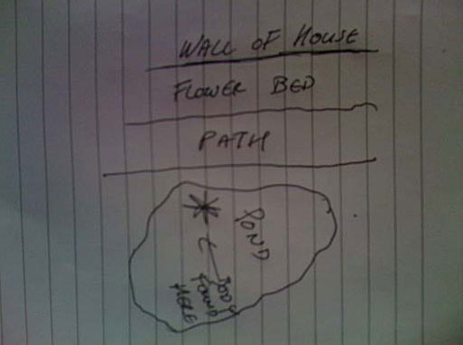

The Green Ladder
Case closed
A PC Jane Downing has come to ask for my help. Her husband died. Everyone thinks it's a tragic accident. She's convinced his brother did it. Brother has a cast iron alibi. I love cast iron alibis so I'm taking on the case.
Background: End of last year, Sir Harry Downing died. Left the house to the older son, Jack. House to stay in the family though - it was to go to Keith, the younger brother, if Jack died without having any kids.
Last month: Jack found dead in the garden pond. He'd no reason to kill himself but no signs of a struggle. High level of alcohol in his bloodstream. Looks like a tragic accident. Looks like Keith gets the house.
Jack's wife, Jane, not convinced. Keith spends the week in Edinburgh and only returns to London for weekends. Even though Keith was in Scotland on the night Jack died, she's certain he was responsible for her husband's death. He'd definitely got a motive.
Update: Have been to the house:
It's the side wall of one of the smaller buildings in the grounds. No windows so nobody could have thrown anything out at the victim. No footprints in the flower bed. Path is loose gravel - fairly narrow but not dangerously so. Jack couldn't swim. He could have slipped on the gravel and fallen in? Looks like an accident.
Update: Have now met Keith - it was definitely not an accident.
Update: Spoken to Jane again. Got her to tell me everything she could about the victim. He was boringly mundane. One thing I noticed when she was setting the table - she spilt some salt so she threw it over her shoulder. Apparently it's bad luck to spill salt. I asked if her husband believed in similar nonsense and she confirmed he did. Also asked her about his drinking - he didn't drink that much, usually just beer.
Update: Returned to the house and examined the flower bed. Nothing. Examined the gravel... and took some away to examine in closer detail.
Update: Traces of green paint in the gravel. In two specific patches, about a metre apart. A ladder. No windows in the wall so it's an unlikely place to put a ladder. And if you were to put a ladder there, you'd put it in the flower bed, not on the path. Have spoken to the house gardener - there's no green ladder on the property. Conclusion: The ladder was brought to the house and placed there for some other reason.
Summary: Keith knew his brother was superstitious. He arranged for a friend to put a ladder there - knowing Jack would walk around it. There was a bottle of Scotch in the house which Keith had sent to Jack - knowing he wasn't much of a drinker. Jack drinks the whisky, gets drunk, goes for a walk, loose gravel, dark night - sees the ladder. Bad luck to walk under the ladder, so walks around it - into the pond where he drowns.
I'll text Jane later. Case closed.